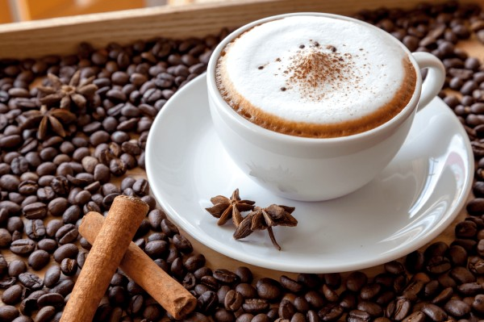

Капучи́но (от итал. cappuccino — «капуцин») — кофейный напиток итальянской кухни на основе эспрессо с добавлением в него подогретого до 65 градусов вспененного молока.
Происхождение названия напитка связано с тем, что в Европе XVII века название ордена капуцинов служило, в частности, и для обозначения характерного цвета (красно-коричневого), который имели рясы монахов этого ордена; в XVIII веке так же стали называть кофейный напиток из яичных желтков и сливок, который стали готовить в Австрии (нем. Kapuziner). Итальянская форма названия напитка (cappuccino) фиксируется лишь с XX века. В XIX веке падре Карло изобрёл первую машину по изготовлению капучино, где в одном отделении нагревалась вода и получался пар, и пар по трубочке шёл во второе отделение, где вспенивалось молоко.